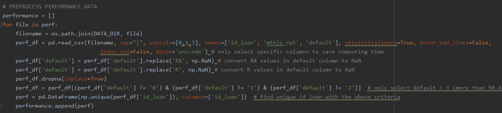

Mortgage default occurs when a borrower fails to make a repayment to the lender. This project analyzes the characterics of borrowers and loans that would later default using the data available at origination. Being able to flag a bad loan before making a funding decision is an ideal scenario for both the lenders and borrowers. The lenders would be more careful about funding that loan, while the borrowers, if rejected, are not taking more debt than they can repay. Therefore, being able to flag a loan at the origination state is very important.
This project uses Freddie Mac Single Family Loan Level Data and performs analysis on all loans funded by Freddie Mac between 2010 and 2018. The data was obtained from Freddie Mac website in as zip files. Every zip file contains data of the entire year which was broken down into data of each quarter. Each quarter contains two different text files: (1) Origination Data and (2) Performance Data. The structure of the data is as follow:
The 30-year fixed mortgage interest rate downloaded from Freddie Mac website contains the monthly interest rate for 30-year fix-rate mortgages between 2013 and 2018. This variable was later used in calculating the rate of Spread at Origination (SATO). The Origination data contains variables that indicate the characteristics of the borrowers, the loans, and the properties. More specifically:

The Performance data contains information on how the loans perform monthly. It contains variable such as Current Unpaid Principal Balance, Loan Status, Loan Age, Number of Years to Maturity, etc. For the purpose of this study, only variable Loan Status from Performance data was used.
The code below is a snipet of the data cleaning process.
Tab Overview shows the total number of loans funded in each state. Click on any state in the first plot to see the corresponding total by year in the second plot.
Tab Population (%) compares the number of loans in serious delinquency vs performing loans.
Tab Top States with Delinquency shows the top 5 states with the highest rate of delinquency.
During the 2013-2018 period, Freddie Mac purchased the most properties in California, Texas, Florida, and Ohio. These states were also the ones with the highest delinquency rates. The total number of delinquency in these states made up about 50% of all delinquency in the US.

The plots above calculate the average of each numberical characteristics and compare between performning loans and delinquent loans. Overall, average DTI, LTV, MI percentage, and interest rate of default loans are higher than performing loans. Average credit score and SATO rate of delinquent loans are higher than performing loans. The wide gap in SATO rate between these loan statuses indicates on average, both perfoming loans and delinquent loans received higher interest rates than market average. Additionally, loans that would later delinquent received a much higher interest rates at origination than loans that would later perform.
Before modeling, One Hot Encoder was applied to categorical values and Label Encoder was applied to the target.
The data was standardized and split into training and testing sets with the ratio of 7:3.
The dataset was resampled twice to compare the results of different sampling techinques.
Classifiers such as Logistic Regression, Decision Tree, and XGBoost were applied.
Models were evaluated using precision score.
The code below fits different classifers and returns the scores for each model.

The plot above shows the class distribution of all loans funded between 2013 and 2018.
| Model | Precision Score Training | F1 Score Training | Precision Score Testing | F1 Score Testing |
|---|---|---|---|---|
| Logistic Regression | 0.996 | 0.498 | 0.992 | 0.996 |
| Decision Tree | 1.0 | 1.0 | 0.512 | 0.514 |
| XGBoost | 0.996 | 0.500 | 0.829 | 0.499 |
Undersampling is applied so that the majority class is 50% more than the miniory class. The above plot shows the class distribution after resampling.
| Model | Precision Score Training | F1 Score Training | Precision Score Testing | F1 Score Testing |
|---|---|---|---|---|
| Logistic Regression | 0.752 | 0.735 | 0.515 | 0.497 |
| Decision Tree | 1.0 | 1.0 | 0.507 | 0.452 |
| XGBoost | 0.817 | 0.809 | 0.515 | 0.494 |

The above plot shows the class distribution after the data was oversampled by 20% and undersampled by 30%.
| Model | Precision Score Training | F1 Score Training | Precision Score Testing | F1 Score Testing |
|---|---|---|---|---|
| Logistic Regression | 0.747 | 0.695 | 0.521 | 0.524 |
| Decision Tree | 1.0 | 1.0 | 0.511 | 0.514 |
| XGBoost | 0.792 | 0.761 | 0.523 | 0.526 |
Through extensive analysis, this study: